島の形・写真保存・作業カメラ
実アプリの原画像。変更前は固定40、変更後は固定42。各ケースは独立した検証で、取得からの一本の実利用経路ではありません。
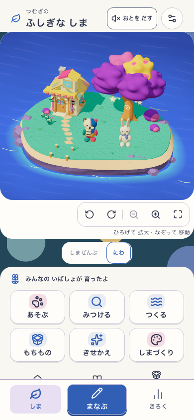
phone: 初期の庭final-island-20260909-001e95ed1175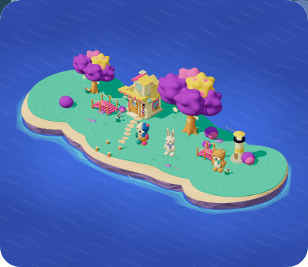
phone: 成熟した島・変更前companion-20260909-b80f785972fa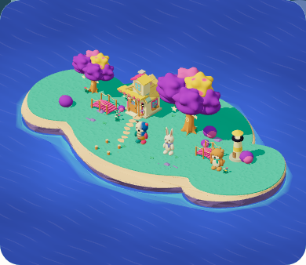
phone: 成熟した島・変更後final-island-20260909-001e95ed1175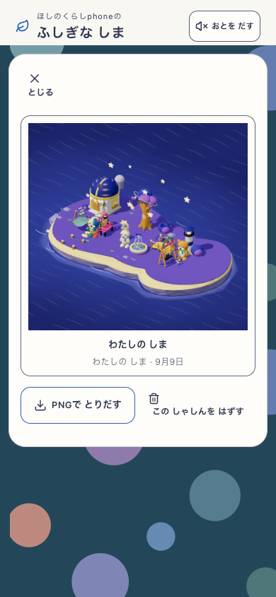
phone: 写真の再読込final-island-20260909-001e95ed1175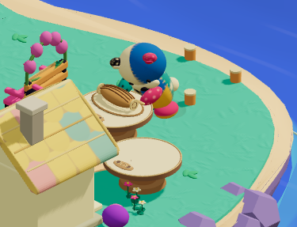
phone: 実物を持つfinal-island-20260909-001e95ed1175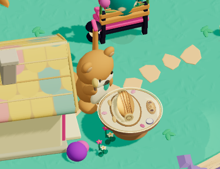
phone: 実物へ光を当てるfinal-island-20260909-001e95ed1175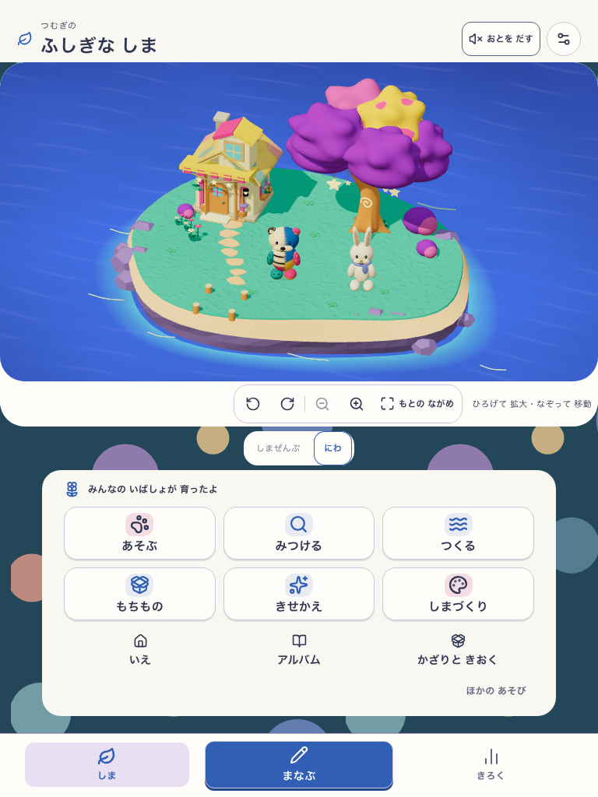
tablet: 初期の庭final-island-20260909-001e95ed1175 tablet: 成熟した島・変更前companion-20260909-b80f785972fa
tablet: 成熟した島・変更前companion-20260909-b80f785972fa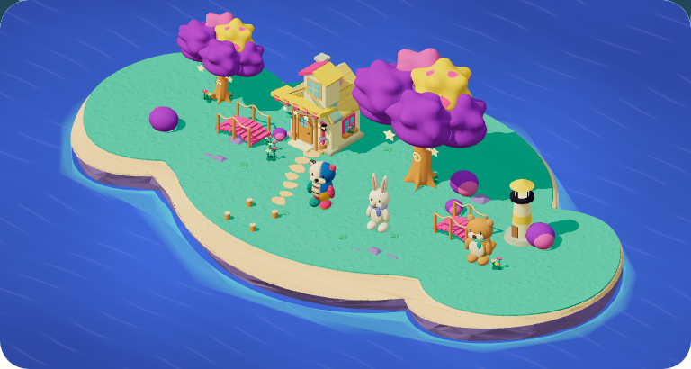
tablet: 成熟した島・変更後final-island-20260909-001e95ed1175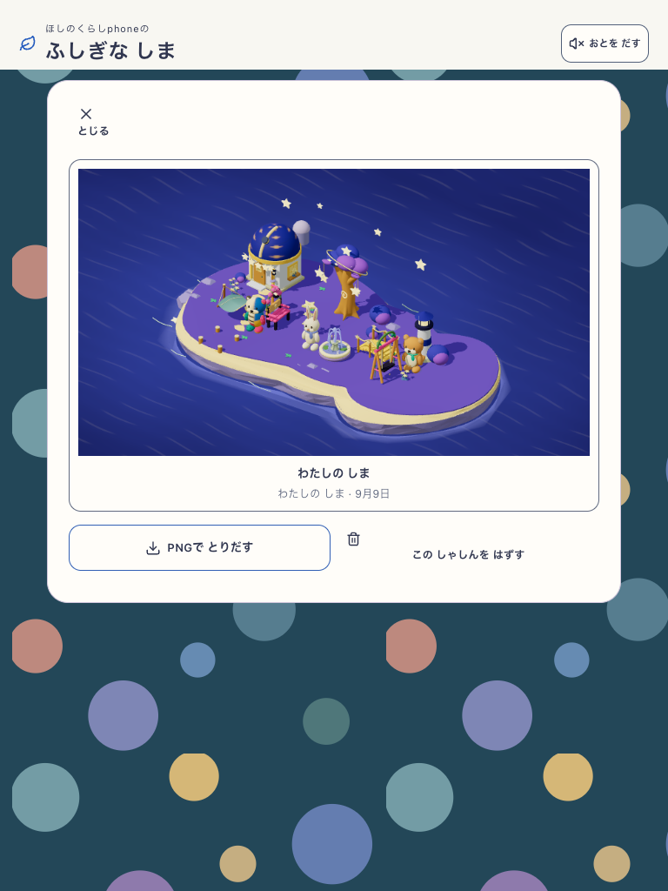
tablet: 写真の再読込final-island-20260909-001e95ed1175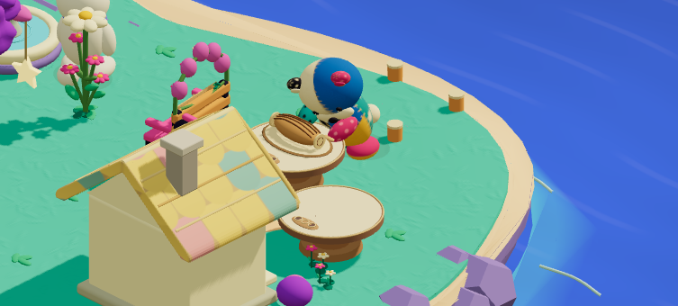
tablet: 実物を持つfinal-island-20260909-001e95ed1175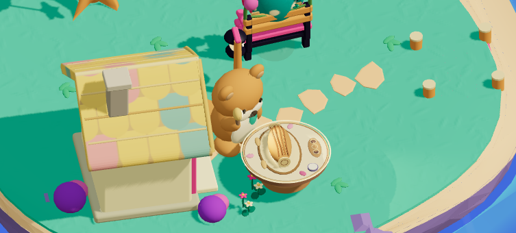
tablet: 実物へ光を当てるfinal-island-20260909-001e95ed1175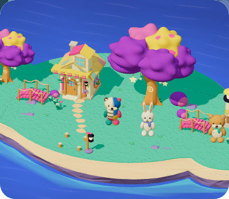
phone: 追加した中央の床へ実配置final-island-20260909-001e95ed1175